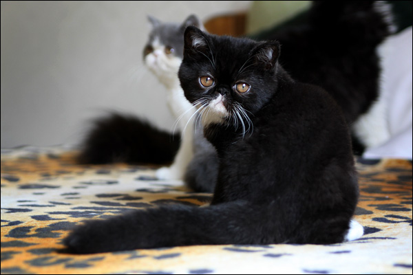

Kot egzotyczny
Wygląd
Pod względem budowy ciała koty egzotyczne powinny być dokładną kopią kotów perskich, z ich masywnym ciałem, okrągłą głową i krótkimi łapkami. Jedynym, co je od persów odróżnia jest futro. Musi być krótkie, niezwykle gęste, odstające od ciała i bardzo miękkie oraz przyjemne w dotyku.
Charakter i zachowanie
Podobnie jak koty perskie, egzotyki są czułe, łagodne, urocze, pozbawione agresji i przywiązane do swych opiekunów. Jako potomkowie persów i ich siostrzana rasa, przejęły wszystkie jej cechy. Niemniej jednak wielu uważa, że koty egzotyczne nieco różnią się od perskich – mają być bardziej od nich energiczne, ruchliwe i skłonne do zabaw.
Pielęgnacja
Pielęgnacja kotów egzotycznych jest niezmiernie łatwa. Wystarczy raz w tygodniu porządnie kota wyszczotkować, co dodatkowo poprawia ukrwienie krwi. Jeżeli nasz pupil ma, podobnie jak koty perskie, bardzo płaską część twarzową, musimy pamiętać, że może mieć kłopoty z oddychaniem lub nadmiernie łzawiące oczy.